3. Submitting data to the DDR
3.1. Choosing a publication method
The DDR has 2 publication mecanisms avaiblable to its users. Each mecanism have its pros and cons, it’s up to the user to choose the one who better suits the operational needs. The user can switch from a publication method to another at any time.
Method
Pros
Cons
QGIS Plugin
Any vector format supported
No data packaging needed
Easy user interface
Publication parameters have to be entered each time
Directory watcher
Easy scripting
Publication parameters entered only once in a control file
Only vector format supported is GPKG
No graphic interface
Data needs to be packaged properly
3.2. Using the QGIS Plugin
The simpliest way to publish a web service with the DDR in to use the QGIS plugin. The plugin only works on the Government of Canada Network, make sure you are on a government network or connected trough a VPN.
3.2.1. Plugin installation
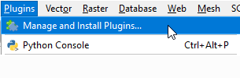
To install the plugin, open QGIS and go to « Plugins -> Manage and Install Plugins ».
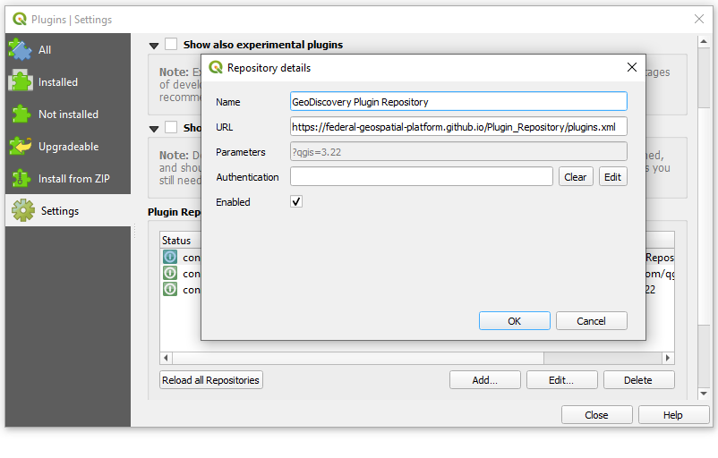
In the « Settings » tab, click on « Add… » and input a name (like « GeoDiscovery « ) and the URL of the repository: https://federal-geospatial-platform.github.io/Plugin_Repository/plugins.xml
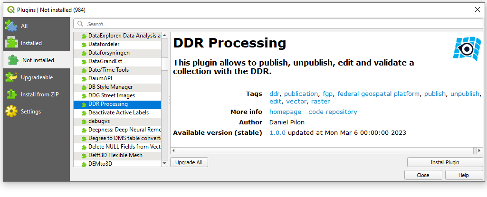
In the « Not installed » tab, select the plugin called « DDR Processing » and click on « Install Plugin ».
3.2.2. Plugin login
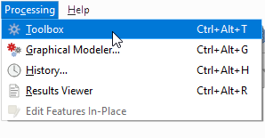
To use the plugin, head to the QGIS Processing Toolbox (« Processing -> Processing Toolbox »).
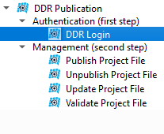
In the « DDR Publication » tool, expand « Authentication (first step) » and double-click on « DDR Login ».
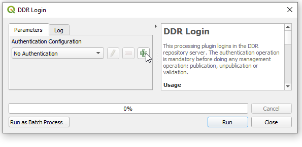
The first time the plugin is used, click on the + sign to add new credentials.
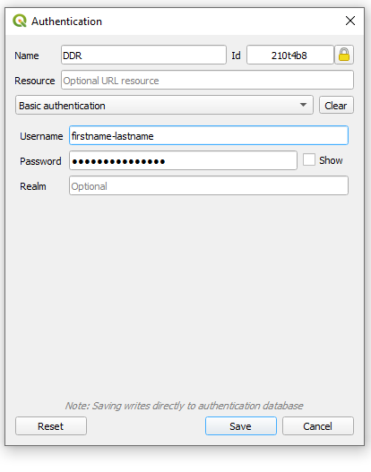
Enter a connection name and input the GeoAD credentials provided by our support team (Help resources).
Now, with the new connection selected, hit the Run button to connect to the DDR.
3.2.3. Publish
The first time a dataset is published to the DDR, the user needs to perform a « DDR Publish ». In the « DDR Publication » tool, select « Publish Project File » and input the following parameters. To make sure the package is correctly built, it is possible to perform a validation before publishing (see 3.2.3. Validate).
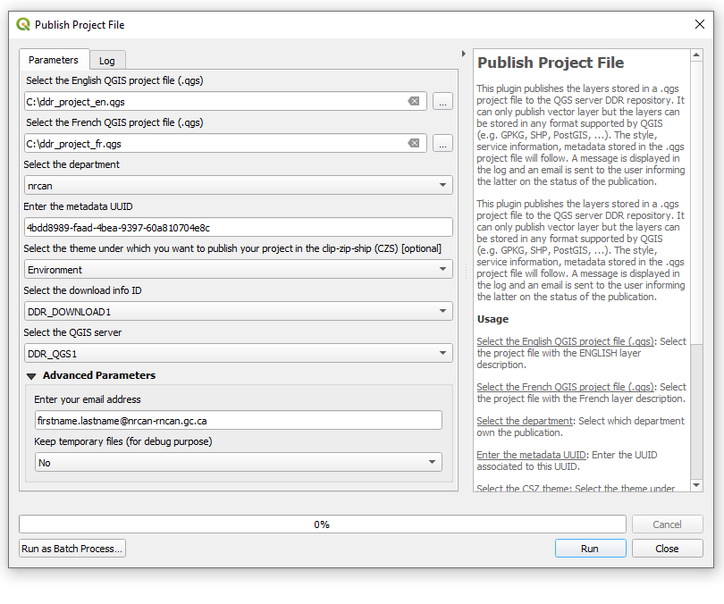
Select the English project file (.qgs only).
Select the French project file (.qgs only).
Select a department from the list of department for which you are authorized to publish.
Enter the medata ID of the record in the FGP catalogue.
If you want your layers to be available as a Clip-Zip-Ship collection, select a theme [optional].
Select the server for the download package when applicable.
Select the QGIS server for the web services.
In the advanced parameters, a different email for the reception of the publication report can be inputed.
In the advanced parameters, the user can choose to keep the temporary package used to publish.
3.2.4. Unpublish
To remove a dataset from the DDR, select « Unpublish Project File » from the « DDR Publication » tool. Any corresponding collection published in the Clip-Zip-Ship will be automatically deleted by this process.
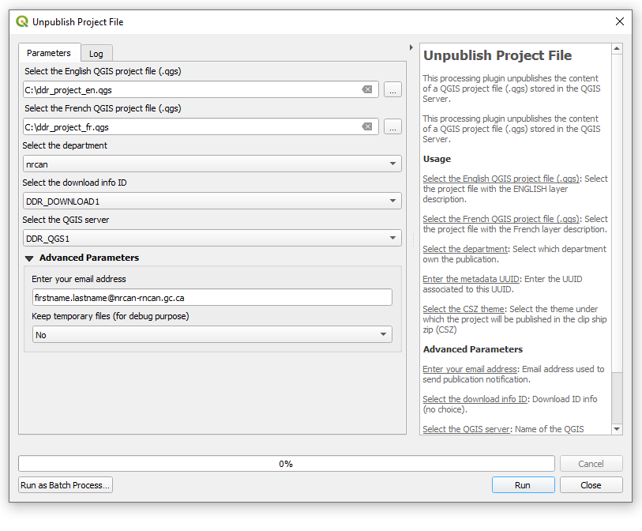
Select the English project file (.qgs only).
Select the French project file (.qgs only).
Select the department in which the dataset is published.
Select the server on which the downloadable files are published.
Select the QGIS server on which the web services are published.
In the advanced parameters, a different email for the reception of the unpublication report can be inputed.
In the advanced parameters, the user can choose to keep the temporary package used to unpublish.
3.2.5. Update
The update (republish) works exactly like the publish, but it allows the user to update an existing dataset. The parameters are the same than 3.2.3. Publish.
3.2.3. Validate
Before sending their data to Publication, Update or Unpublication, the users can validate the content of a QGIS project file (.qgs) and its control file by using Validate. Select what process you want to validate your data for and look at the results in the Log tab.
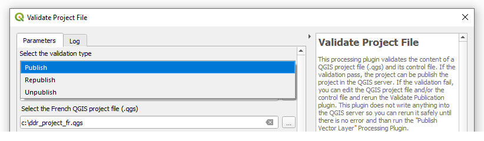
3.3. Using the directory watcher
The directory watcher is an alternative publication method that consists in dropping a zipped package on a sFTP server. It can be useful for projects that require frequent updates. File creation and transmission can also be scripted from end-to-end. It is also the prefered method when dealing with large datasets.
Files needed for a publication or update using the directory watcher:
Control file
English QGS file
French QGS file
Geopackage(s) containing the data
Zipped download folder [optional]
3.3.1. Creating a control file
Instead of using a user interface, the user must set up a control file to record their instructions. Download the template and fill the required information.
Generic parameters tab:
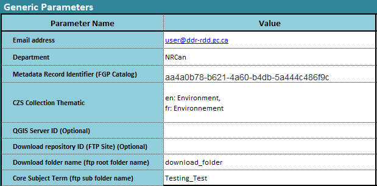
Email: The user email address (must be a registered user address).
Department: The official English department acronym (user must be authorized to publish for this department).
Metadata Record Identifier: The UUID of the related FGP metadata record.
CZS Collection Thematic [optional]: To register the collections in the Clip-Zip-Ship, select a theme.
QGIS Server ID [optional]: Leave this parameter empty for the moment.
Download repository ID [optional]: Leave this parameter empty for the moment.
Download folder name [optional]: The name of the folder inside the ZIP file containing the downloadable data.
Core Subject Term [optional]: To publish files to the FTP server, select a core subject term.
Service parameters tab:
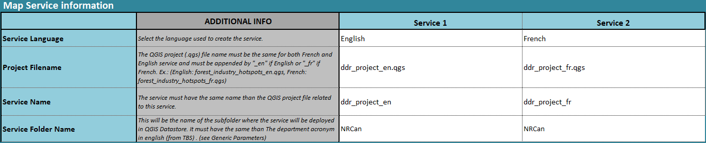
Service Language: Leave as is.
Project Filename: Name of the QGIS project files.
Service Name: Filed automaticaly based on the project filename.
Service Folder Name: Filled automatically based on the department specified in the other tab.
3.3.2. Preparing data
3.3.3. File packaging
3.3.4. Sending the package for processing
3.4. System messaging
À remplir